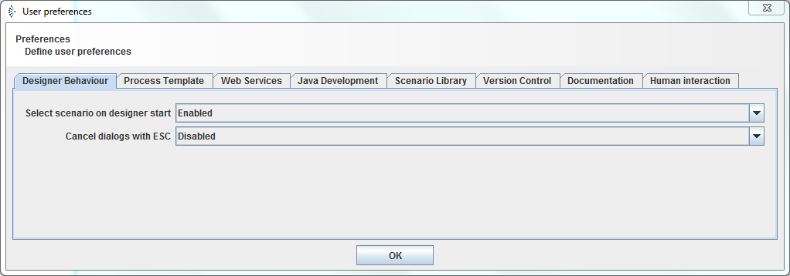

Configuration

Topic content
There are some configuration properties which control the behaviour of the Orchestra designer. The user can configure these properties using the menu entry Help -> Preferences
opening the preferences dialog
There are a set of tabs where the user can set the behaviour of the designer and its compontent editors.

All this information is stored on your local computer:
On Windows
start Regedit: [Windows]-[R] -> „Regedit“
HKEY_CURRENT_USER\Software\JavaSoft\Prefs\emds\epi\graph
On Linux
/home/akn/.java/.userPrefs/emds/epi/graph/prefs.xml
Designer Behaviour
•Select scenario on designer start If this property is Enabled and the user starts the Designer the he has to select a scenario as a first step. Otherwise the Designer will open the last scenario the user worked with.
•Cancel dialogs with ESC controls the behaviour of the ESC key
Process Template
•Template Process templates define the process variables which are automatically created if a new process model is created. Currently there are three templates available to select: DEFAULT, Healthcare scenarios and Healthcare scenarios with service bus and signals. When using DEFAULT the process variables CURMSG, ERROR and USER are created. The template Healthcare scenarios defines MSG, ERROR, MSGID, PID and CASENO, the template Healthcare scenarios with service bus and signals additionally defines MSGEVENT, SOURCE, DESTINATION and FROMSIG.
•Automatic properties assignment If this property is Enabled for each target parameter where no assignment is defined in the template an assignment <varname> = <varname> is generated automatically if a process variable with the given name exists. E.g if you add a mapping or a channel invocation and the mapping or the channel defines a parameter SIZE and the process model defines a process variable SIZE too, then an assignment SIZE = SIZE will be generated automatically.
•Show rarely used tabs in process model If this property is Enabled, in the process model some panels are displayed which are almost never used. E.g. if this property is Enabled a parameter assignment panel is displayed for a ReceiveTask activity, which normally makes no sense for this type of activity.
Web Services
•Show WSDL If this property is Enabled, after export of a WSDL the WSDL is immediately opened with the standard browser.
•Directory to store the WSDL This parameter contains path to the default directory where to export a WSDL file
•Check namespaces If this property is Enabled and the name of a Webservice provider or a Webservice clients has no namespace, it is considered as error when validating the element. If the value of this property is Enabled missing namespaces cause a warning. Also if this property is Enabled and a message type has no namespace this is also considered as an error when validating the scenario element.
Java Development
If you got a Developer Key from Orchestra support you can create and modify scenario elements of type Java Source. In this case you must configure some properties to enable the Java compiler to work properly.
Scenario Library
The properties in this tab are used if Scenario libraries are used.
•Include Path This parameter contains a path to a directory from where to include scenario libraries.
•Update If this property is set to Automatic scenario elements are updated automatically from the Scenario library whenever a standard scenario is deployed or whenever a scenario is opened with the designer.
Version Control
The properties in this tab are used if scenario Versioning is used.
•Enter comment before push If this property is Enabled the user is asked to enter a comment before the push operation is executed.
•Push comment This field contains the default comment used to comment changes if Enter comment before push is Enabled. It may contain the two variables DATE and TIME like in Push from Orchestra Designer {TIME}, {DATE}. This variables are replaced by the current date and time if the push operation is executed.
•Reload history If this property is Enabled then the history view is updated after every commit or checkout.
Documentation
•Show documentation If this property is Enabled, after export of the scenario documentation it is immediately opened with the standard browser.
•Directory This parameter contains path to the default directory where to export the documentation.
Human Interaction
The properties in this tab are used together with Human Interaction scenario elements and the worklist handler. In order to use the work list handler, you need to set the to Enabled and enter the path to the webapp.
•Mode If this property is Disabled, then the Worklist service is not started if Orchestra is started.
•Path to Web application This is the path to the worklist server application. You should not select the war file itself here but the application folder (the folder has the same name as the war file and is located in the same directory as the war file).
•List of users This parameter contains a comma separated list of users. it is used to create a dummy scenario that contains the configured users for authentication.
•Default user login If this parameter contains a value it is used as default user name and password; it is one of the values in the List of users.